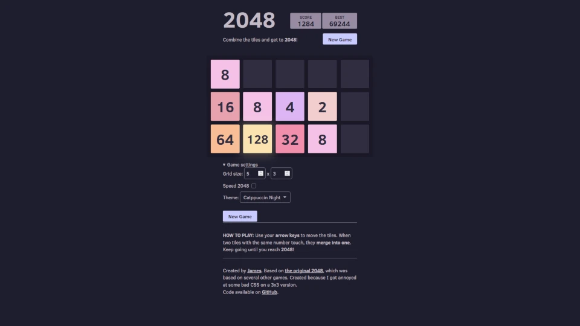
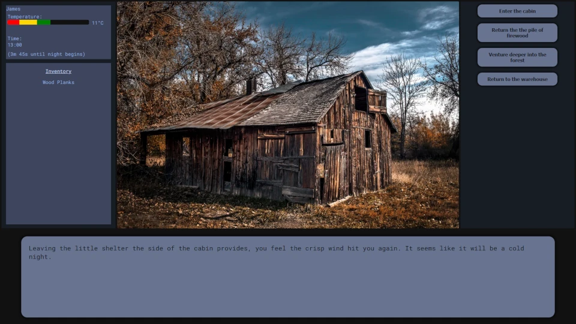
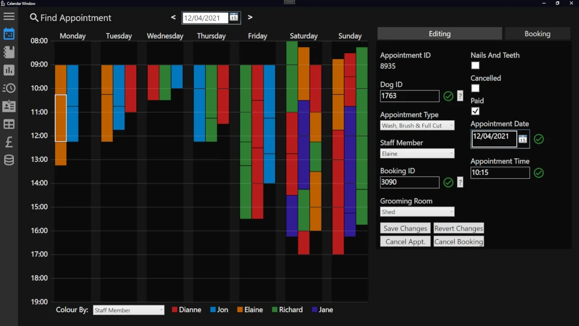
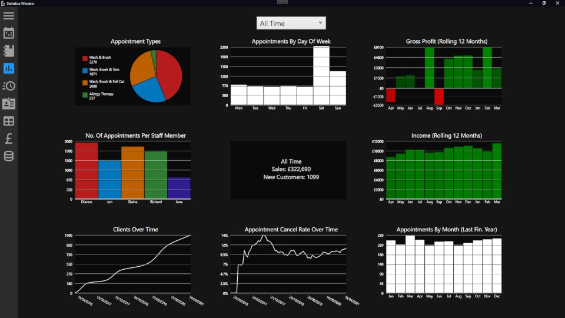
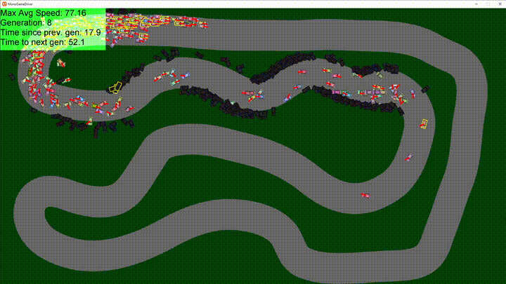

Projects Test
A list of most of the projects I've worked on, mostly personal projects with a few from university
Personal website
The website you're currently browsing! Created from scratch by me, and optimised to be as minimal as possible. (The main page is under 50kb!) Several of the main pages, like this one, were created by hand, with some (e.g. blog posts) being generated automatically from markdown using another program I created ( WebGenJava ). Not the optimal way of doing things - many better options and better static site generators exist out there, but I wanted to have fun with this as a personal project.
Code on GitHub
CSC1028
The project I created for the CSC1028 module I opted to do, providing all sorts of metadata on a given URL. See my blog post on it for a lot more info, and also the how-to guide I wrote for dealing with Project Sonar's data.

NodeJS API code here Firefox addon code here Electron app code here
MusicBee installation script
A shell script to install and set up MusicBee (a Windows-only music player) on Linux.
Uses winetricks to set up the required wineprefix correctly, installs libraries to improve the range of supported media formats, fetches an existing configuration to skipt the out-of-box experience, download the desired plugins and themes, and create an improved XDG desktop entry to better integrate into the Linux desktop system.
Code here
2048 clone
A significantly modified version of the original 2048, with new features including:
- Allowing boards of any arbitrary size
- Support for theming, including a dark mode
- Additional challenges, such as an extra tile being added every second
- Slightly tidier code, making use of updates to javascript and CSS since the release of the original version
Made for fun to improve on an existing project and gain some more experience with browser javascript
Code here, and playable over here
Last Stand Text Adventure
A text adventure made as a group project for our CSC1030 (Web Technologies) module. I created the majority of the CSS for the layout, along with the temperature and typewriter systems used by all other group members. I also worked with them to create the inventory and timer systems also used throughout the game. We worked great together, and later returned to work together for our CSC2058 (Software Engineering and Systems Development) coursework.
Code here, playable here.
A2 Project
This application was my A2 coursework project for Software Systems Development, written between 10/11/2020 and 14/03/2021 using C# and WPF. See the git repo for more details and features
This is still a project I'm very proud of - It's got a few minor flaws, but it has some features I put a lot of work into and I'm very happy with the end result.

Code here
Driver
An application I wrote from scratch with several parts:
- A 2D driving simulation that actually feels fun to drive around in
- A system for creating and improving genetic neural networks written entirely from scratch to allow me to better understand how simple networks like that actually function
... the end result of which is networks which can drive a car pretty well based on only a few sensors (5 distances to the edge of the track at different angles)
Code here
CPU-based raytracer
A multithreaded CPU ray tracer written in C#. Based on the "Ray Tracing in One Weekend" book. Features:
- Reflections (inc. reflections of reflections)
- Refraction (e.g. light passing through glass spheres)
- Accurate shadows
- Depth of field
- Multithreaded for significantly improved performance
Although performance could significantly be improved by offloading the GPU (Which is better suited for that kind of workload) it was still a very fun project to work on
Code here
Catppuccin MusicBee theme
A theme for the MusicBee music player based on the very nice catppuccin colour palettes

Code & theme here
Particle/powder toy simulator
A small particle/powder toy simulator. Very basic - its flaws are definitely noticable if you're looking for them - but I still enjoyed messing around with this kind of cellular automaton

Code here
PlanetPhysics
An n-body physics simulator built for fun as a side project.
Currently uses the less accurate Euler method for integration (this is mostly mitigated by using very small step sizes), but ideally it should use something like the Runge-kutta methods for better accuracy.
Includes several pre-set situations, including a fictional but nice-looking system (shown below), a stable 3-body figure-8 system, a binary star system, and our solar system to scale (with and without moons)

Code here
WebGenJava
The program I wrote to convert markdown to the HTML you're currently viewing. Although there are already existing solutions that offer this sort of functionality (eg pandoc), and other better static site generators already exist, I wanted something that gave me slightly more control over the result, and to have a bit of fun creating my own solution.
Code here